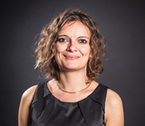

Nous aimerions remercier quelques personnes sans qui notre projet aurait été beaucoup plus difficile à accomplir:
Audrey Dussutour
Tout d'abord nous aimerions remercier Audrey Dussutour chercheuse du CNRS au Centre de recherches sur la cognition animale à l'université Toulouse III Paul Sabatier, auteur du livre "Tout ce que vous avez toujours voulu savoir sur le blob sans avoir jamais oser le demander" qui nous a été d'une grande aide pour réaliser nos expériences in vitro.
Jeff Jones
Nous aimerions également remercier Jeff Jones, professeur à l'Université de l'Ouest de l'Angleterre (UWE) à Bristol qui nous a été d'une aide précieuse sur le code de notre interface graphique.